Round 2: the story, told with evidence
Round 1 rearranged the same marketing copy. Round 2 starts from research instead: how a capital project really runs, where P6 and the rest of the tool stack fail (with a source for every figure), and what DiPGOS actually does about it, read from the product repo rather than guessed. All four mocks share one new copy deck. They differ in what the page leads with: the argument, the product in use, the model, or the lifecycle.
Research: verdict and claim sheet ·
what DiPGOS really does ·
lifecycle and tool failures ·
Copy: COPY.md · Brief: BRIEF.md
View these through the local server (npm run serve, then /docs/redesign-mocks-r2/).
Markings: † marks a client name that needs permission; an amber dashed box marks something only you can supply; superscript numbers link to that page’s Sources.
R2 · A
The record
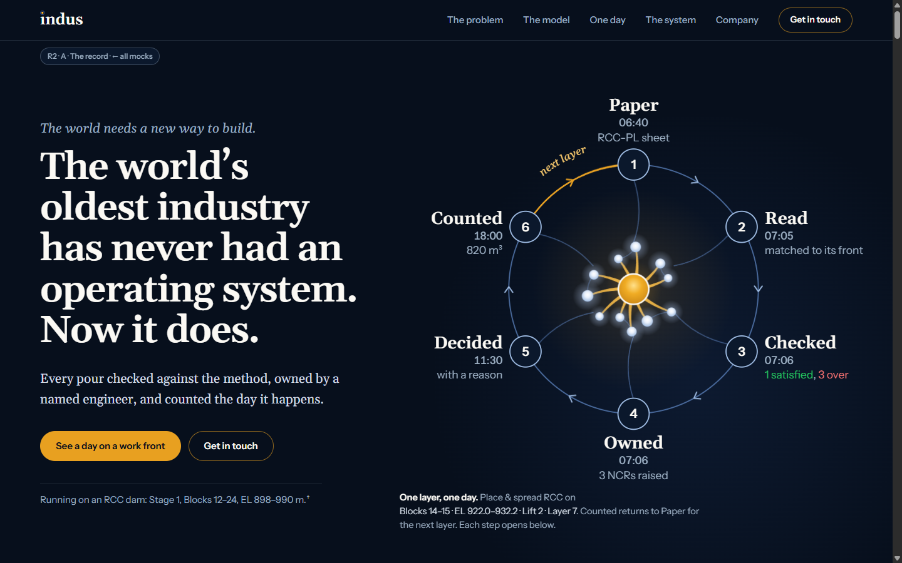
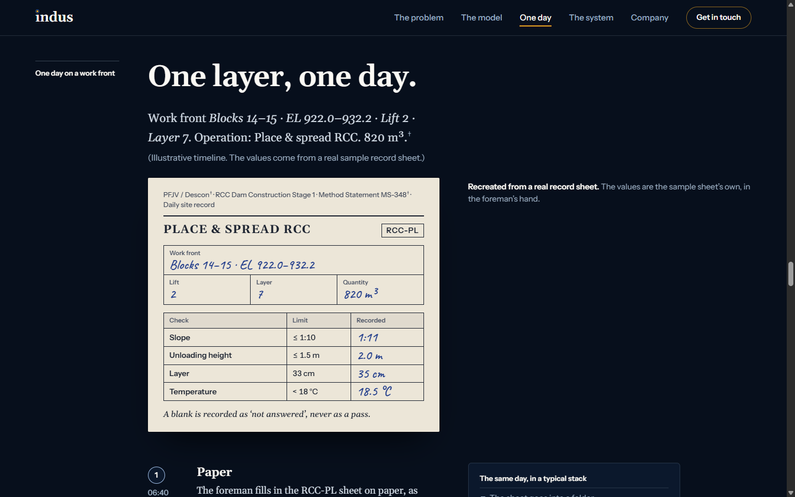
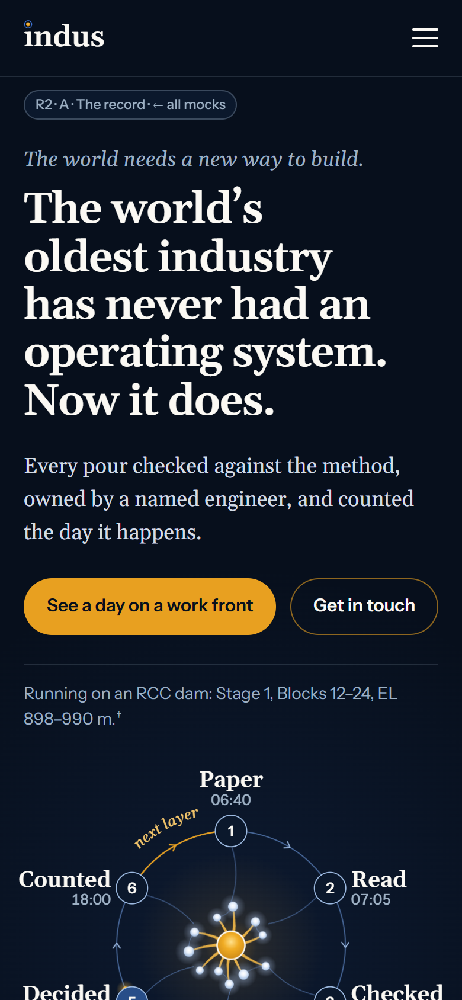
Round 1’s C, grown up: an editorial long-read in Gelasio, with every figure’s source printed in the margin beside it, like a well-edited report. The hero ring now shows the real day: Paper 06:40 → Read → Checked (1 satisfied, 3 over) → Owned → Decided → Counted 18:00, then round again for the next layer.
- Leads with
- The argument: ambition first, then evidence, chapter by chapter
- Signature
- Sources in the margin, and the ring of the real day
- Type
- Gelasio for body and headings; Instrument Sans for buttons and labels
- The most serious, credible register. It reads like engineers wrote it
- It keeps what you liked in C
- The longest desktop page (19.7 screens)
- The phone version cuts the most, including the lifecycle chapter
Open R2-A
R2 · B
The work front
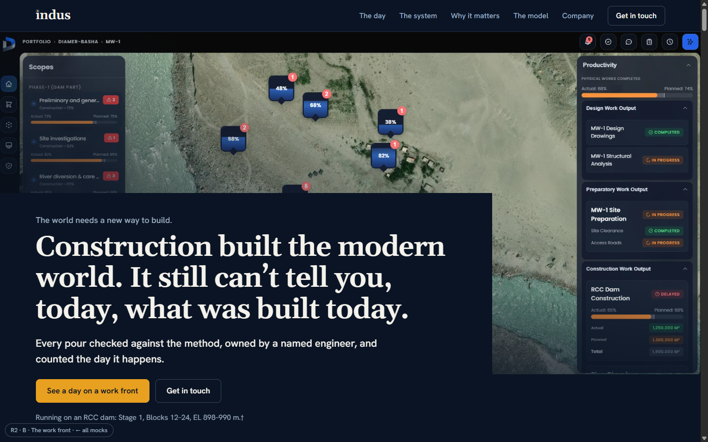
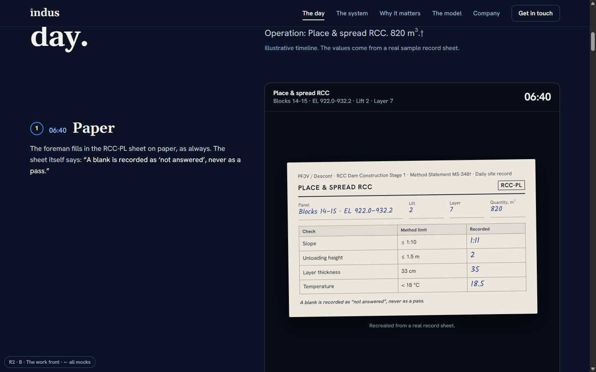
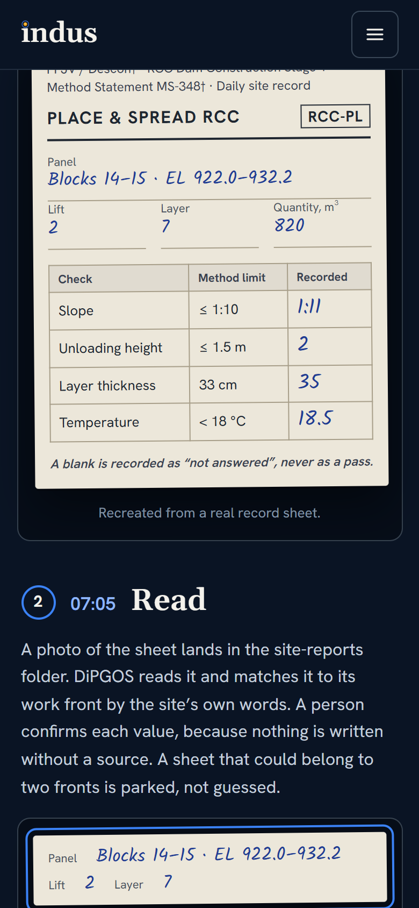
The product proves it. You scroll through one layer’s day while a pinned panel shows what the system sees: the paper sheet, the match to its work front, gauges drawing each margin in green or red, the three NCRs with their owners, the sign-off, and 820 m³ counted on a cross-section of the lift. A clock runs from 06:40 to 18:00.
- Leads with
- The product in use
- Signature
- The pinned “what the system sees” panel through the day
- Type
- Gelasio headings + Hanken Grotesk; product blue for markers
- The most concrete: nobody can mistake it for vapourware
- Carries B’s product-first idea, which you liked
- Drops the lifecycle section
- The NCR owners (site engineer, materials engineer ×2) are the builder’s own mapping; confirm them
- The site-reports strip is small on desktop
Open R2-B
R2 · C
The model
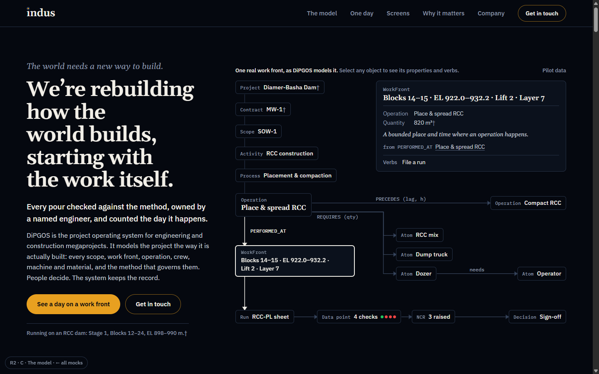
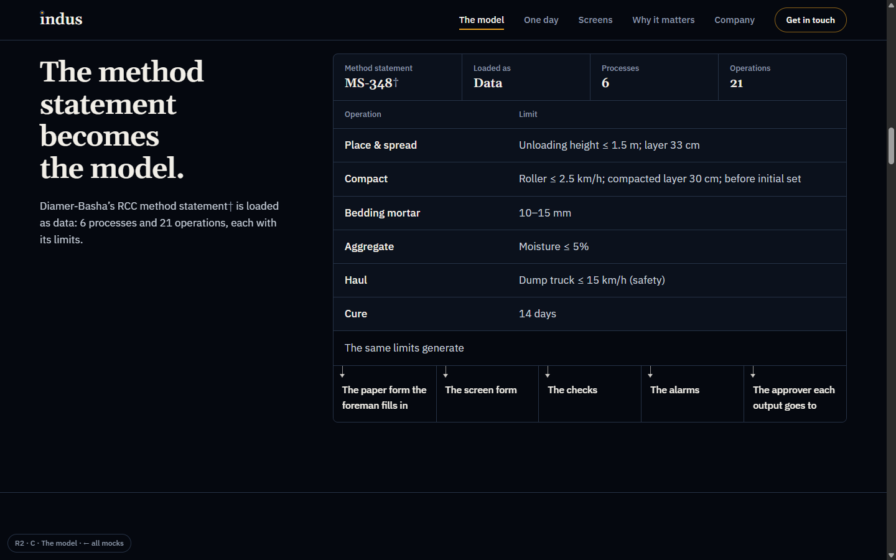
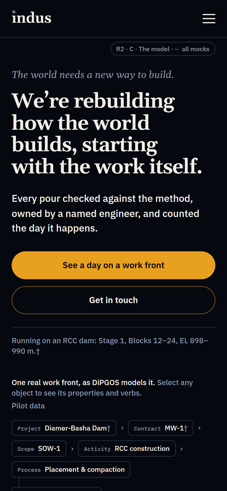
The model leads. The hero is an explorable map of one real work front: Project → Contract → Scope → Activity → Process → Operation “Place & spread RCC” → Work front, with its Atoms, Run, checks, NCRs and sign-off. Tap any part to see its properties, its links and its verbs. The page then walks through nouns, relations and verbs, the method statement as a spec sheet, and one verdict per discipline.
- Leads with
- The model: the ontology is the hero
- Signature
- The explorable graph, using only the product’s real vocabulary
- Type
- Gelasio headings + IBM Plex Sans; Plex Mono only for object-type names
- The clearest answer to “what makes DiPGOS different”
- The shortest desktop page of the four (14.6 screens)
- Asks more of the reader up front. The stakes come later, as “why it matters”
- Drops the lifecycle section
Open R2-C
R2 · D
The lifecycle
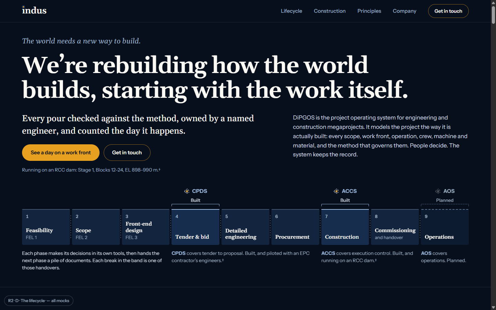
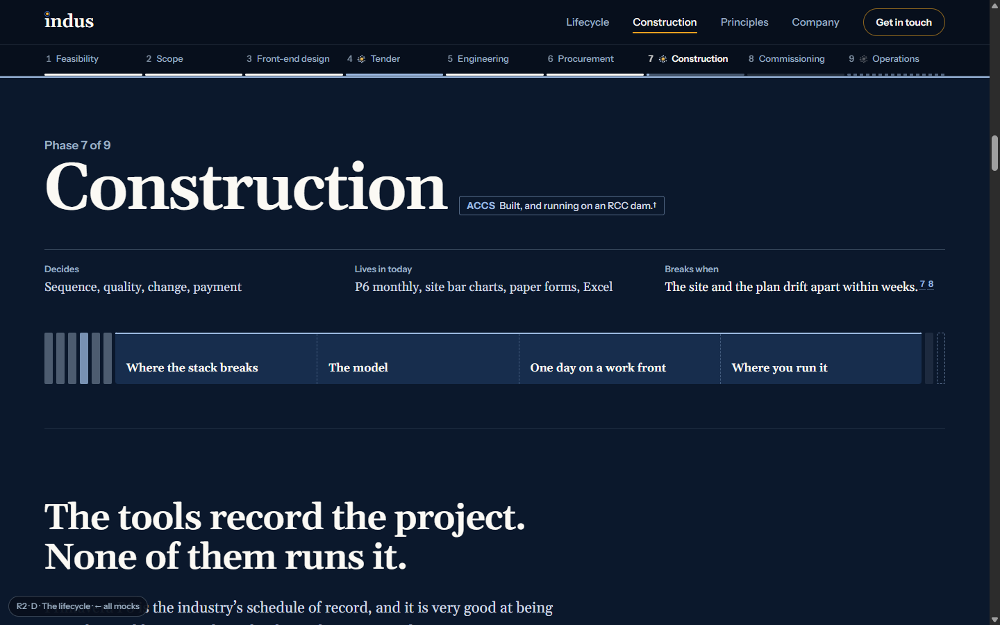
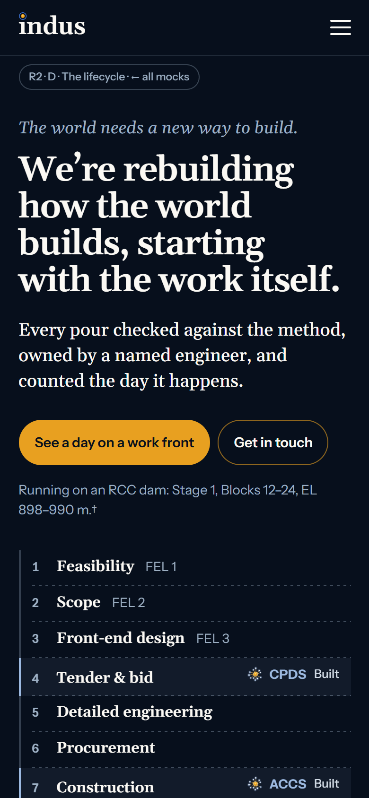
The whole project, and where DiPGOS stands in it. Nine phases from feasibility to operations, with each handover drawn as a gap. DiPGOS’s coverage sits above the band: CPDS at tender (built), ACCS at construction (built) and AOS at operations (planned). The band becomes a rail that fills in as you read. At Construction it opens into the deep dive: where the stack breaks, the model, one day, and the screens.
- Leads with
- The lifecycle, as you asked
- Signature
- The nine-phase rail, with DiPGOS’s coverage and progress
- Type
- Gelasio headings + Instrument Sans
- The only mock that tells the full lifecycle story you asked for
- Says honestly what is built and what is planned
- The per-phase chapters make it the most schematic
- The phone version cuts a lot inside the construction deep dive
Open R2-D
Side by side
| A · The record | B · The work front | C · The model | D · The lifecycle |
|---|
| First screen shows | The ambition + the ring of the day | The live command centre | The object graph | Nine lifecycle phases + coverage |
|---|
| Lifecycle story | Yes (desktop only) | Cut | Cut | The spine of the page |
|---|
| Where the stack breaks | Chapter | Each failure paired with its fix | Later, as “why it matters” | Inside Construction |
|---|
| Real product screens | Command centre + app screens | Command centre + gallery | Command centre + app screens | Command centre + app screens |
|---|
| Length, desktop | 19.7 screens | 19.2 | 14.6 | 17.1 |
|---|
| Length, phone | 13.6 screens | 13.6 | 13.1 | 13.8 |
|---|
Screens are measured at 1440×900 and 390×844. These pages are much longer than round 1 (8–10 screens on desktop) because the substance is now on the page. Every mock carries footnoted sources, the † permission note, a real, runtime-assembled contact address, and no mention of Palantir. None scrolls sideways from 360 to 1600px, and none throws script errors.
Parts you can mix
- A’s margin sources work in any layout. They’re the cheapest credibility on the page.
- B’s pinned day could replace the “one day” chapter in A, C or D.
- C’s graph could be the “model” chapter inside D’s construction deep dive.
- D’s lifecycle rail could sit above A as its chapter navigation.
Needs your decision before anything ships
- Permissions. Can these be named: Diamer-Basha, MW-1, MS-348, PFJV and Descon? The command-centre screenshot also shows “DIAMER-BASHA · MW-1” in its breadcrumb. A masks it; B, C and D don’t, and neither does the live site today.
- The $15 trillion figure from the current site needs a source, or it comes out.
- Company facts: years, projects, offices. All placeholders for now.
- Things these mocks leave out on purpose, because the product repo shows them as not ready: autonomy; the risk, HSE and change modules; the decision engine; “learns from feedback”; and the pilot’s progress figures.